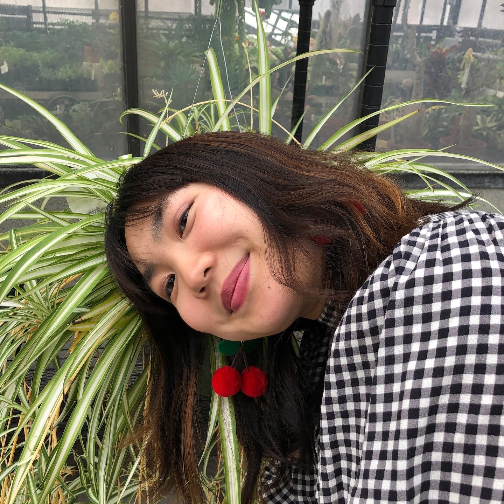
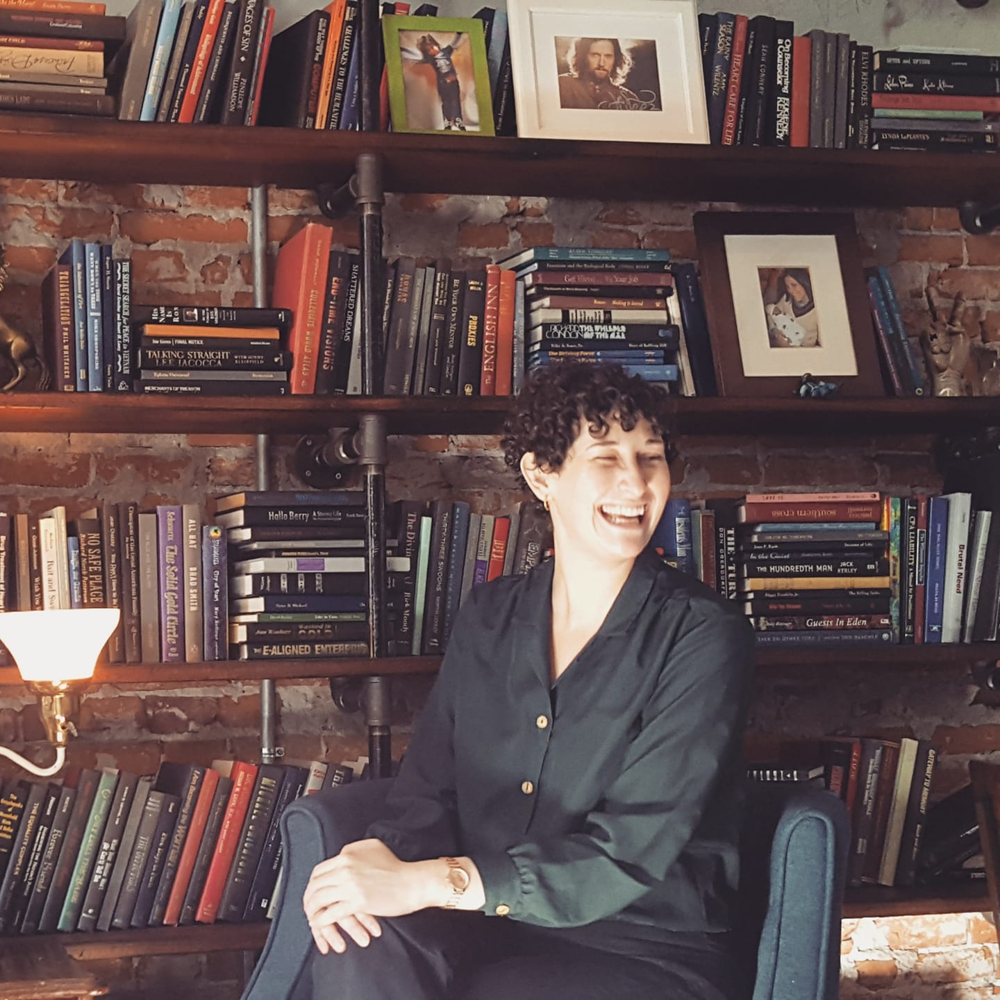

Death to Museums asks why save museums at all?
The idea to “destroy” museums comes not from a place of hate. As museum workers, we see the untapped potential in museum collections and programs to challenge engrained ideologies rather than maintain them. However, we question the efficacy of changing museums from within when inequity is built into their core identity. As Tunde Wey, a New Orleans-based activist and artist, writes, “Can you renovate a burning house? Can you renovate a single room in a burning house?”
Museums are not neutral and never have been. From the beginning, they were built on the systematic destruction of indigenous cultures and history, profited off centuries of looting, and continue to reinforce white supremacist and capitalist power structures. Though they pretend to be apolitical during times of crisis, their daily actions and silences make their stance very clear. In order to actively work against these power hierarchies, there must be a collective shift towards confronting the internal practices that reproduce them.
Why now?
During the COVID pandemic, the true inequity inherent in museum structures was laid bare. Thousands of museum workers were let go in the midst of this crisis, while museum directors and boards of trustees refused to take pay cuts in order to secure the livelihood of their lowest-paid workers who, due to the pervasive practice of unpaid labor and expensive advanced degrees begetting career advancement, are disproportionately people of color and lower socioeconomic status. Furthermore, despite education being at the forefront of many museum mission statements, education staff were among the first to be laid off.
When museum workers demand compensation commensurate with their hard work and passion, through union organizing and assertive salary negotiations, they are vulnerable to retaliation from senior leadership. Museums have historically retaliated against unions, and have taken the opportunity during the pandemic to continue this practice.
We hope that Death to Museums can provide a platform to interrogate these issues and more as we work towards actionable change.
Who We Are:
June Ahn (she/her/hers)
June is a Chicago-based museum educator, program facilitator, and illustrator. She received her B.A. in Biological Sciences and Landscape Studies from Smith College and M.A. in Museum and Exhibition Studies from the University of Illinois at Chicago. She has worked at laboratories at the Royal Botanic Garden, Kew and the University of Chicago. Her graduate research at the University of Illinois at Chicago focused on creating informal plant education opportunities for students in collaboration with the UIC Plant Research Laboratory. The series of 23 programs consisted of interdisciplinary collaborations with artists, educators, and scientists that centers visitor accessibility. She has coordinated community science events for the Field Museum of Natural History and is currently the Sustainability and Green Space Coordinator at the National Public Housing Museum. If you would like to learn more about her work, please visit juneahn.me or email juneahn2@gmail.com.

Rose Cannon (she/her/hers)
Rose is is a Chicago-based arts administrator and museum educator currently working as the Administrative & Marketing Coordinator for the Midwest Chapter of the American Association of Media Photographers (ASMP). Rose is primarily interested in expanding access to creative resources and careers in the arts through alliances between art spaces, schools, non-profits, and social service organizations. To this end, her graduate research took the form of a partnership with Chicago non-profit One Heart One Soul and young adults with lived experience of homelessness to organize an exhibition at a university gallery. Previously, Rose has worked at the Bay Area Discovery Museum, the Oakland Museum of California, the Peggy Guggenheim Collection, and the Santa Cruz Museum of Art & History. She received her B.A. in the History of Art & Visual Culture from the University of California at Santa Cruz and her M.A. in Museum and Exhibition Studies from the University of Illinois at Chicago. See more of her work at rosecannon.me or reach out to her at rosekcannon@gmail.com.
Emma Turner-Trujillo (she/her/hers)
Emma is is a Chicago-based museum collections specialist. She received her B.A. in Mesoamerican Art History from the University of California, Los Angeles, and received her M.A. in Museum and Exhibition Studies from the University of Illinois at Chicago. She has worked in a number of museums, including the Getty Museum and the National Veterans Art Museum, and is presently the assistant registrar in anthropology at the Field Museum of Natural History. Her research interests include indigenous Mexican codices, the history of pre-Columbian collections in the United States, and repatriation of looted burial goods. Her graduate project led to the creation of the Ancient American Provenance Database, which digitally reunited collections of Andean ceramics housed in geographically distant locations across the United States and Europe. Feel free to reach out at eturne23@uic.edu.